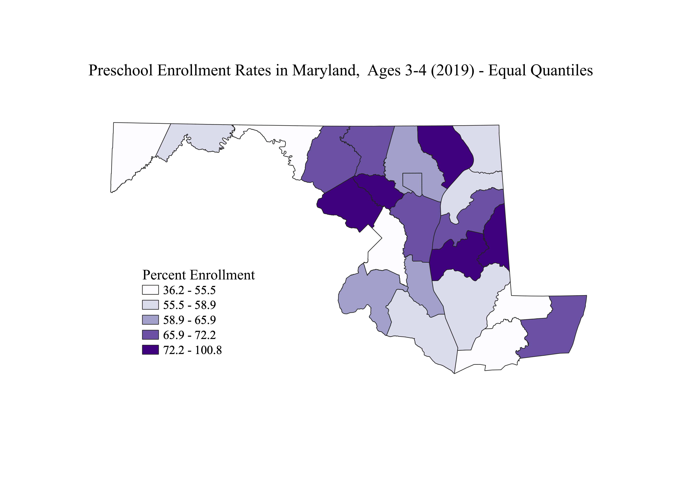

Representing Ratios Using Different Data Classification Methods
Savannah Wilson
I created these maps using the ratio of the number of children ages 3-4 enrolled in preschool out of the total population aged 3-4 per county. I used the total population of children ages 3-4, instead of the entire county population, to get an accurate representation of school enrollment rates. The percent of the entire population enrolled in preschool would not show any significant findings.
Method 1: Equal Quantiles
The equal quantile method is useful for evenly distributed data or data that follows the normal distribution. There is more variation of data within the intervals, since they are not the same size. One issue with this method is that features in the same class can have very different, or very similar, values, depending on how large the interval is.

Method 2: Equal Intervals
The equal interval method is the easiest classification to read. The intervals are the same size, so the legend is easy to follow. Issues arise when there are outliers; they can make the data look skewed by adjusting the break points and size of the intervals.
Method 3: Natural Breaks
The natural breaks method allows for the best view of the data distribution. This method is ideal for unevenly distributed data. It accounts for outliers, so it does not create the illusion of skewed data. It is difficult to compare natural break maps from different data sets because the intervals are unique to each data set.